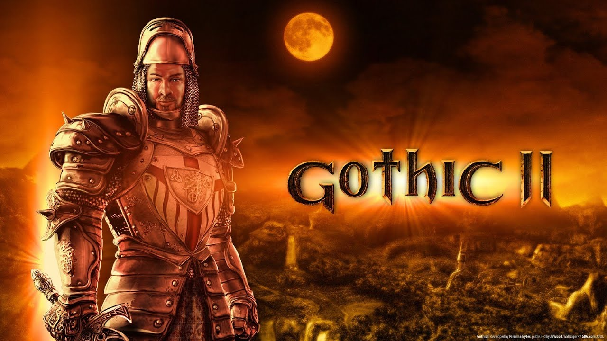
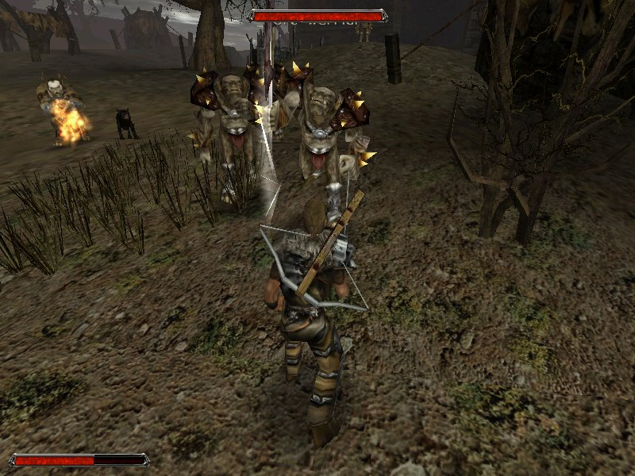

#3 Gothic 2
Si pe cel de-al treilea si ultimul loc se afla jocul Gothic 2.
Jocul apartine din aceeasi categorie ca cel precedent, Skyrim, numai ca acesta difera, evident, prin mecanici, atmosfera, lume, marime si poveste.
Trebuie scos in evidenta ca in acest joc ai deja un protagonist facut, fara a fi nevoie sa-l creezi, iar la el se face referinta prin porecla "Nameless Hero", deoarece el nu are niciodata ocazia nu numai pe parcursul acestui joc, ci pe parcursul intregii serii sa se prezinte.
Acest joc apartine seriei de jocuri Gothic si reprezinta un exemplu bun de poveste in care protagonistul ajunge de la un simplu prisonier(din motive necunoscute) la un erou.
Povestea este legendara, iar acesta este considerat cel mai bun joc din seria Gothic.
Povestea, lumea, atmosfera, muzica si protagonistul reprezinta ceea ce m-a facut sa adaug acest joc pe lista favoritelor mele. De asemenea, acesta reprezinta unul din primele mele jocuri, fiind un joc al copilariei.
Mentiuni:
Crysis 2
Gothic
Devil May Cry 4
The Elder Scrolls IV: Oblivion
The Elder Scrolls III: Morrowind
Smite
Assassin's Creed
Assassin's Creed 2
The Witcher 3
Darksiders
Age of Wushu
9Dragons
Star Wars Jedi Knight: Jedi Academy
Cave Story
Ring of Elysium